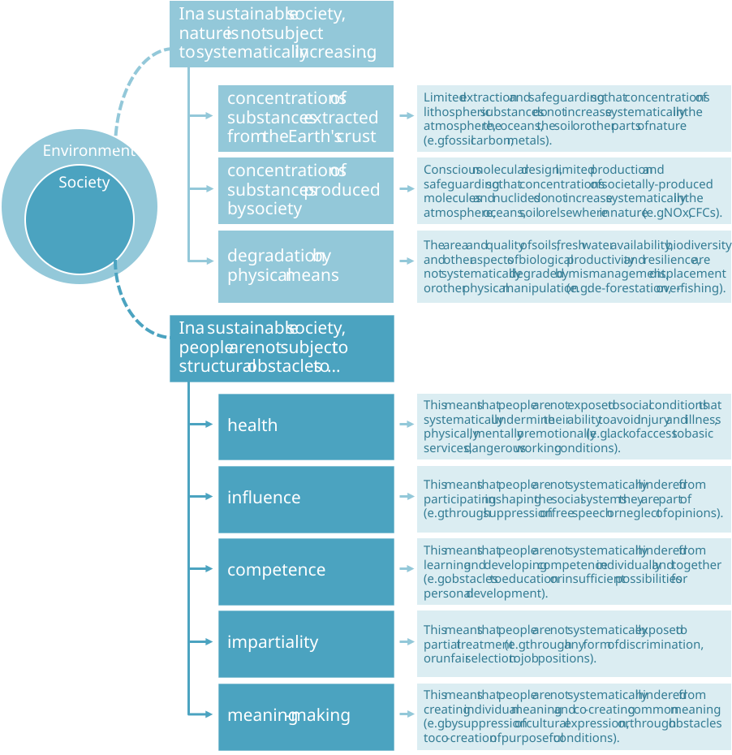
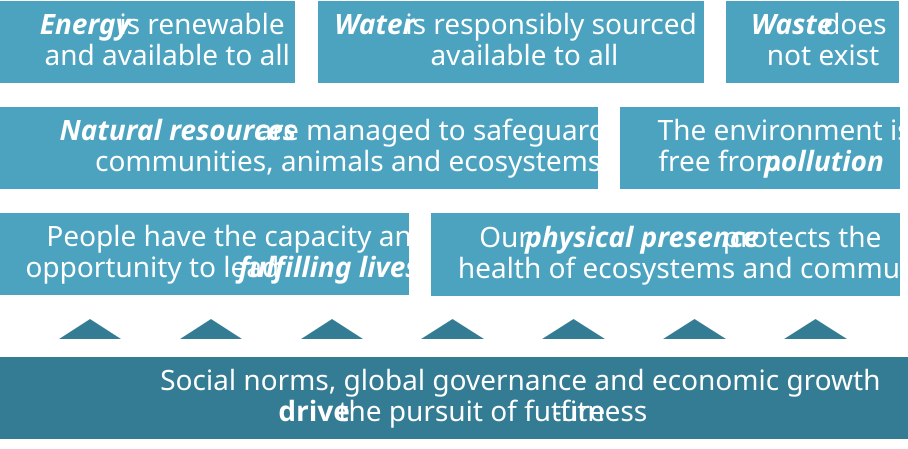

4. Wohin wir gehen müssen: eine zukunftsfähige Gesellschaft
John Masefield
4.1 Beginnen Sie mit dem Ende im Hinterkopf
Was müssen wir alle anstreben?
Im vorherigen Kapitel haben wir die Welt durch eine Systemlinse betrachtet, um zu verstehen, wo sich die Menschheit heute befindet, wie wir hierher gekommen sind und was sich ändern muss. Wir haben auch gelernt, dass die Gesellschaft als vielschichtiges Netzwerk voneinander abhängiger sozialer Systeme betrachtet werden kann.
Um unsere globalen Herausforderungen zu meistern (Abbildung 3.6), müssen alle sozialen Systeme im besten Interesse der Gesellschaft als Ganzes handeln und in Symbiose mit den natürlichen Systemen der Erde funktionieren. Nur dann wird es unserer globalen Wirtschaft möglich sein, die Bedürfnisse der Menschheit innerhalb der planetaren Grenzen zu erfüllen. Um dorthin zu gelangen, sind sowohl individuelles als auch kollektives Handeln erforderlich. Und um sicherzustellen, dass diese Maßnahmen wirksam sind, brauchen wir ein gemeinsames Ziel:
Eine zukunftsfähige Gesellschaft schützt die Möglichkeit, dass Menschen und anderes Leben auf der Erde für immer gedeihen, indem sie sozial gerecht, wirtschaftlich inklusiv und umweltschonend ist.4
Soweit so gut, aber um die richtigen Verhaltensweisen anzuleiten, zu erkennen und zu belohnen, brauchen wir etwas Umsetzbareres.
Welche konkreten Ergebnisse müssen wir alle anstreben, um die Möglichkeit menschlichen Gedeihens zu schützen? Was müssen wir in Bezug auf den Energie- oder Wasserverbrauch tun? Wie müssen wir mit natürlichen Ressourcen umgehen? Und wie sollen Menschen behandelt werden? Nur wenn wir diese Fragen beantworten können, können wir Wege finden, um zu signalisieren, wie – und wie stark – sich ein soziales System ändern muss, und um herauszufinden, wer die wahren Führer sind.
Glücklicherweise haben uns mehr als 25 Jahre Forschung eine solide Grundlage geschaffen, auf der wir aufbauen können.
4.2 Der Anspruch an die Gesellschaft
Acht Systembedingungen weisen uns auf eine blühende Zukunft hin.
Die Menschheit kann nur dann auf Erfolg hoffen, wenn wir eine einheitliche und praktische Definition dessen haben, was es für eine Gesellschaft bedeutet, „nachhaltig zu sein“, gepaart mit einem systematischen Planungs- und Aktionsansatz zur Erreichung dieses Zustands.
Diese Erkenntnis veranlasste eine Gruppe von Wissenschaftlern Anfang der 1990er Jahre, mit der Arbeit an dem zu beginnen, was in der Wissenschaft als Framework for Strategic Sustainable Development (FSSD) bekannt geworden ist (siehe unten). Im letzten Vierteljahrhundert wurde der FSSD durch eine Kombination aus Prüfung anhand empirischer Daten, Tests in der Praxis und akademischer Peer-Review kontinuierlich verfeinert. Im Kern sind es acht Systembedingungen, die zusammen bestimmen, wie die Gesellschaft funktionieren muss, wenn wir das soziale Gefüge und die natürlichen Systeme schützen wollen, von denen unsere Zukunft abhängt. Diese Systembedingungen sind in dargestellt Abbildung 4.1. Man kann sie als ‘Spielregeln’ betrachten, an die wir uns alle halten müssen. Sie geben an, welche Verhaltensmuster ökologisch und sozial akzeptabel sind, d. h. sie verhindern, dass es zu degenerativen Folgen kommt.
Einige der Anwendungsmöglichkeiten dieser Regeln sind leicht erkennbar. Beispielsweise stellt die Nutzung von Energie aus fossilen Brennstoffen ein Problem dar, wenn die durch deren Verbrennung verursachten Treibhausgase in die Luft gelangen. Dieses Ergebnis verstößt gegen die erste Systembedingung, da solche Emissionen zu einer systematischen Erhöhung der natürlichen Konzentrationen von Substanzen beitragen, die aus der Erdkruste extrahiert werden.
Der Rahmen für strategische nachhaltige Entwicklung (FSSD)
Im Jahr 1989 leitete Dr. Karl-Henrik Robèrt die Gründung des FSSD und gründete ihn auch Der natürliche Schritt, eine gemeinnützige Organisation, deren Aufgabe es ist, die Nutzung des FSSD auf Gemeinde-, Unternehmens-, Stadt- und sogar Landesebene zu fördern und zu fördern.
Der FSSD umfasst ein fünfstufiges Modell, das – zusammen mit der Nutzung von backcasting – dient sowohl dazu, den erforderlichen Endzustand für die Gesellschaft zu definieren, als auch dazu, Planung und Maßnahmen dorthin zu erleichtern. Die Systembedingungen bilden die zweite der fünf Ebenen. In wissenschaftlichen Texten werden diese Systembedingungen als Nachhaltigkeitsprinzipien bezeichnet, im geschäftlichen Kontext wird jedoch von vielen der erstere Begriff bevorzugt. Einen hervorragenden akademischen Überblick über das FSSD finden Sie unter [14].
Das Future-Fit-Team ist Karl-Henrik und The Natural Step zu Dank verpflichtet – insbesondere den kanadischen und schwedischen Teams – ohne deren frühzeitige Unterstützung der Future-Fit Business Benchmark nicht existieren würde.
Abbildung 4.1: Die acht Systembedingungen, die bestimmen, wie die Gesellschaft funktionieren muss.

Diese Systembedingungen dienen als Leitfaden für radikale Innovationen.
Die gute Nachricht ist, dass die acht Systembedingungen eine klare Orientierung bieten, was angestrebt werden sollte. Obwohl sie definieren, was nicht passieren darf, sollte dies als befreiend und nicht als einschränkend angesehen werden: Solange nicht gegen sie verstoßen wird, ist alles möglich. Daher fördern die Systembedingungen radikale Innovationen, indem sie uns helfen, in eine blühende Zukunft zu steuern, ohne eine bestimmte Vorgehensweise vorzuschreiben.
Wir müssen künftige Verstöße gegen die Systembedingungen verhindern…
Jedes soziale System verstößt heute routinemäßig gegen eine oder mehrere dieser Systembedingungen. Während einzelne Verstöße möglicherweise relativ geringe Auswirkungen haben – die auf globaler oder gesellschaftlicher Ebene nicht messbar sind –, machen ihre kumulativen Auswirkungen diese Verstöße unhaltbar. Daher stellen diese Systembedingungen den ökologischen und sozialen Break-Even-Punkt für die gesamte Gesellschaft dar.
…aber wir müssen auch die Auswirkungen vergangener Verstöße rückgängig machen.
Leider verstoßen wir schon so lange und auf so vielfältige Weise gegen die Systembedingungen, dass wir jetzt mehr tun müssen, als nur neue Verstöße zu verhindern: Wir müssen Wege finden, die Auswirkungen bereits aufgetretener Verstöße rückgängig zu machen.
Aus ökologischer Sicht bedeutet dies, die Fähigkeit der Erde, den Bedürfnissen der Menschheit gerecht zu werden, aktiv wiederherzustellen – beispielsweise durch die Regeneration biologischer Lebensräume und die Neutralisierung der Auswirkungen früherer Umweltverschmutzung.
Aus sozialer Sicht müssen wir die strukturellen Hindernisse für soziale Gerechtigkeit und wirtschaftliche Inklusion überwinden, die dazu führen, dass ein großer Teil der Weltbevölkerung immer noch nicht in der Lage oder Möglichkeit ist, ein erfülltes Leben zu führen.
4.3 Eigenschaften einer zukunftsfähigen Gesellschaft
Die regenerativen Ergebnisse, die eine Future-Fit Society liefern würde.
Im vorherigen Kapitel haben wir alles, was wir über die ökologischen, gesellschaftlichen und wirtschaftlichen Zusammenhänge wissen, zusammengefasst, um acht Schwerpunktbereiche zu identifizieren, die umfassen, wie sich alle sozialen Systeme auf Menschen oder den Planeten auswirken können, im Guten wie im Schlechten.
Indem wir jeden Schwerpunktbereich durch die Linse der FSSD-Systembedingungen betrachten, können wir einen umfassenden, themenspezifischen Satz regenerativer Ergebnisse identifizieren, die wir alle anstreben müssen.
Anhang 1 fasst zusammen, wie diese Zuordnung durchgeführt wurde. Die daraus resultierenden Ergebnisse können wir uns als die acht Eigenschaften einer zukunftsfähigen Gesellschaft vorstellen Anhang 4.2), die nun jeweils beschrieben werden.
Abbildung 4.2: Die sieben Kerneigenschaften einer zukunftsfähigen Gesellschaft sowie eine achte befähigende Eigenschaft, die die sozioökonomischen Treiber identifiziert, die zur Verfolgung der anderen erforderlich sind.

4.3.1 Energie ist erneuerbar und für alle verfügbar
Alle menschlichen Aktivitäten – der Anbau und das Kochen von Nahrungsmitteln, das Heizen und Beleuchten von Gebäuden, der Transport von Gütern und Menschen von einem Ort zum anderen – erfordern Energie.
Rund 80 % der Energie, die wir heute verbrauchen, stammt aus nicht erneuerbaren Ressourcen, insbesondere aus fossilen Brennstoffen. Beim Verbrennen dieser fossilen Brennstoffe wird Kohlendioxid freigesetzt, und dieses ist einer der Hauptverursacher des Klimawandels und der Versauerung der Ozeane.
Auch die Art und Weise, wie wir fossile Brennstoffe gewinnen, ist ein Problem. Techniken wie Fracking und Tagebau verursachen enorme Belastungen für die Umwelt.
Darüber hinaus verfügt ein großer Teil der Weltbevölkerung einfach nicht über ausreichenden Zugang zu Energie, um ihren täglichen Bedarf zu decken. Schätzungen zufolge haben 20 % der Weltbevölkerung keinen Zugang zu Elektrizität und 2,7 Milliarden Menschen verfügen nicht über saubere und sichere Energie zum Kochen.
In einer zukunftsfähigen Gesellschaft stammt die gesamte Energie aus erneuerbaren Quellen – Sonne, Wind, Geothermie usw. –, die sauberes Wachstum und nachhaltige Entwicklung unterstützen. Und es steht jedem ausreichend Energie zur Verfügung, sodass auch die entlegensten Gemeinden ihren täglichen Bedarf decken können.
4.3.2 Wasser wird verantwortungsvoll beschafft und steht allen zur Verfügung
Süßwasser ist von entscheidender Bedeutung für die Gesundheit der Menschen, zum Trinken, zum Anbau von Nahrungsmitteln, zum Kochen und für die Sanitärversorgung. Doch viele Menschen verfügen heute nicht über ausreichend sauberes Wasser, um diese Grundbedürfnisse zu decken.
Tatsächlich wird prognostiziert, dass bis 2025 zwei Drittel der Weltbevölkerung unter Wasserknappheit leben werden.
Der verantwortungsvolle Umgang mit Wasser ist ein komplexes Thema, und die Auswirkungen müssen auf lokaler Ebene angegangen werden, da Wassereinzugsgebiete durch die Entnahme von Wasser aus einem Gebiet, die Einleitung von zusätzlichem Wasser, zeitliche Unterschiede zwischen Entnahmen und Abflüssen sowie Änderungen in der Wasserversorgung beeinträchtigt werden können Wasserqualität und andere Wassereigenschaften wie Wärme und pH-Wert.
In vielen Teilen der Welt verbrauchen wir zu viel Süßwasser und das Abwasser, das wir in die Umwelt zurückführen, ist oft verschmutzt.
Deshalb reduzieren wir sowohl die Menge als auch die Qualität des Wassers, das den Gemeinden und den Ökosystemen, von denen wir abhängig sind, zur Verfügung steht.
In einer zukunftsfähigen Gesellschaft wird alles Wasser aus verantwortungsvollen Quellen bezogen und steht allen zur Verfügung. Wir verschärfen den Wasserstress nicht und die Qualität des in die Natur zurückgeführten Wassers ist mindestens so hoch wie bei der Entnahme. Und es steht jedem ausreichend sauberes Wasser zur Verfügung, sodass auch die entlegensten Gemeinden ihren täglichen Bedarf decken können.
4.3.3 Natürliche Ressourcen werden verwaltet, um Gemeinschaften, Tiere und Ökosysteme zu schützen
Die Gesellschaft ist auf eine Vielzahl natürlicher Ressourcen angewiesen. Dazu gehören nicht erneuerbare Ressourcen wie abgebauten Metalle und Mineralien sowie erneuerbare Ressourcen wie Nutzpflanzen und die sie unterstützenden Böden, Tiere, Fische und Wälder.
Heutzutage werden die meisten natürlichen Ressourcen unzureichend bewirtschaftet: Tierleid, Landdegradation und Missbrauch lokaler Gemeinschaften sind an der Tagesordnung. Wir nutzen erneuerbare Ressourcen 1,7-mal schneller, als sie regeneriert werden. Da die am besten zugänglichen, nicht erneuerbaren Ressourcen der Erde aufgebraucht sind, werden Gewinnungsmethoden darüber hinaus häufig immer problematischer.
So ziemlich alle Güter, auf die wir angewiesen sind – von Nahrungsmitteln bis hin zu Telefonen – hängen von natürlichen Ressourcen ab, deren Produktion das Wohlbefinden der Menschen beeinträchtigt oder die Umwelt beeinträchtigt.
In einer zukunftsfähigen Gesellschaft werden natürliche Ressourcen verwaltet, um Gemeinschaften, Tiere und Ökosysteme zu schützen. Pflanzen werden auf geeignetem Land und auf eine Weise angebaut, die die Gesundheit des Bodens erhält. Tiere werden so gezüchtet oder gejagt, dass das Leiden minimiert wird. Alle erneuerbaren Ressourcen werden verwaltet, um ihre zukünftige Verfügbarkeit zu schützen. Und alle nicht erneuerbaren Ressourcen werden gefördert, ohne die umliegenden Ökosysteme und Gemeinschaften zu beeinträchtigen.
4.3.4 Die Umwelt ist frei von Schadstoffen
Nahezu alle wirtschaftlichen Aktivitäten – die Beschaffung von Rohstoffen, die Herstellung und Verwendung von Gütern sowie der Transport von Gütern rund um die Welt – verursachen heute ein gewisses Maß an Umweltverschmutzung.
Es besteht kein Zweifel mehr daran, dass die systematisch zunehmende Konzentration von Treibhausgasen (THGs) in der Atmosphäre zum Klimawandel und anderen Problemen wie der Versauerung der Ozeane beiträgt. Alle Treibhausgasemissionen, die aus der Verbrennung fossiler Brennstoffe und anderen menschlichen Prozessen resultieren, müssen schnell beseitigt werden, wenn wir die katastrophalsten Auswirkungen der globalen Erwärmung vermeiden wollen.
Viele andere Arten von Umweltverschmutzung schädigen die Gesundheit der Menschen und stören natürliche Ökosysteme. Beispiele hierfür sind gefährliche Düngemittel und Pestizide, giftige Chemikalien und eine Vielzahl synthetischer Substanzen, die nicht schnell und sicher abgebaut werden und sich daher in der Natur anreichern.
In einer zukunftsfähigen Gesellschaft ist die Umwelt frei von Schadstoffen. Die Luft ist atmungsaktiv und frei von Schadstoffen, die Böden sind gesund und die Gewässer sauber. Alle schädlichen Emissionen werden vermieden, und die Gesellschaft ist kontinuierlich bestrebt, die durch frühere Schadstoffe verursachten Schäden umzukehren und die Umweltgesundheit wiederherzustellen.
4.3.5 Abfall gibt es nicht
Fast alle Wertschöpfungsketten folgen heute einem linearen Take-Make-Waste-Ansatz. Bei jedem Schritt unserer Produktions- und Verbrauchsmethoden fallen in der Regel materielle Nebenprodukte an, die als Abfall entsorgt werden. Viele wertvolle Materialien werden verbrannt oder auf umweltschädliche Weise entsorgt.
Die Nachfrage nach neuen Ressourcen kann gemindert werden, wenn Materialien einer anderen Verwendung zugeführt und nicht weggeworfen werden. Durch die Umnutzung entfallen auch die finanziellen, ökologischen und menschlichen Kosten, die bei der Abfallentsorgung entstehen.
In einer zukunftsfähigen Gesellschaft gibt es keinen Abfall. Der heutige Take-Make-Waste-Ansatz bei der Materialnutzung wird durch einen Borrow-Use-Return-Ansatz ersetzt. Alle Nebenprodukte menschlicher Aktivitäten – und Güter, die das Ende ihrer Nutzungsdauer erreichen – werden so umgewandelt, dass sie anderen Bedürfnissen dienen und ihren Wiederverwendungswert maximieren.
4.3.6 Unsere physische Präsenz schützt die Gesundheit von Ökosystemen und Gemeinschaften
Die wachsende Nachfrage nach Land sowie Aktivitäten wie Fischerei und Bergbau greifen in die Natur ein und haben zur Zerstörung unberührter Ökosysteme, zur Schädigung kulturell bedeutender Stätten und zur Verletzung der Rechte der lokalen Bevölkerung geführt.
Infolgedessen stehen viele Ökosysteme – vom Regenwald bis zum Korallenriff – am Rande des Zusammenbruchs und die Widerstandsfähigkeit vieler Gemeinschaften ist gefährdet.
In einer zukunftsfähigen Gesellschaft schützt unsere physische Präsenz die Gesundheit von Ökosystemen und Gemeinschaften. Menschliche Aktivitäten greifen nicht in die Natur ein, und die Gesellschaft ist kontinuierlich bestrebt, geschädigte Ökosysteme zu regenerieren – und die Rechte der Gemeinschaft an Land, Ressourcen und Gebieten von kultureller Bedeutung wiederherzustellen.
4.3.7 Menschen haben die Fähigkeit und Möglichkeit, ein erfülltes Leben zu führen
Das Gedeihen einer Gesellschaft hängt in hohem Maße vom Wohlergehen der Menschen ab, die dazu beitragen.
Aber heute leben Milliarden von Menschen in irgendeiner Form von Armut und haben keinen Zugang zu grundlegenden Dienstleistungen und wirtschaftlichen Möglichkeiten. Darüber hinaus sind Menschenrechtsverletzungen und Diskriminierung weit verbreitet.
In einer zukunftsfähigen Gesellschaft haben die Menschen die Fähigkeit und Chance, ein erfülltes Leben zu führen. Dies bedeutet, dass jeder seine Grundbedürfnisse befriedigen kann – nach Ernährung, Bildung, Gesundheitsversorgung usw. – und gleichzeitig die Freiheit hat, höhere Bedürfnisse zu verfolgen – wie Sinngefühl, Zugehörigkeit und Kreativität.
4.3.8 Gesellschaftliche Normen, globale Governance und Wirtschaftswachstum treiben das Streben nach Zukunftsfähigkeit voran
Die anderen sieben Eigenschaften einer zukunftsfähigen Gesellschaft beschreiben die Ergebnisse, die eine solche Gesellschaft liefern wird. Im Gegensatz dazu geht es bei dieser Eigenschaft darum, die Bedingungen zu schaffen, die diese Ergebnisse ermöglichen.
Soziale Normen, globale Governance und die Art und Weise, wie wir Wirtschaftswachstum anstreben, bestimmen das Verhalten aller sozialen Systeme. Heutzutage sind diese Treiber falsch ausgerichtet, sodass wir weiterhin auf demselben Pannenpfad bleiben, der zu den existenziellen Problemen geführt hat, mit denen wir jetzt konfrontiert sind.
Beispiele für bahnbrechende Technologien und Geschäftsmodelle lassen sich überall finden, aber solange die Gesellschaft solche Unternehmungen nicht wirklich wertschätzt und aktiv fördert, kann es sich als unmöglich erweisen, ihren Erfolg in ausreichender Geschwindigkeit und in ausreichendem Umfang zu wiederholen.
In einer zukunftsfähigen Gesellschaft treiben soziale Normen, globale Governance und Wirtschaftswachstum das Streben nach Zukunftsfitness voran. Schneller und radikaler Fortschritt wird eher zur Regel als zur Ausnahme, weil die Gesellschaft Handlungen anerkennt und belohnt, die uns in die richtige Richtung führen.